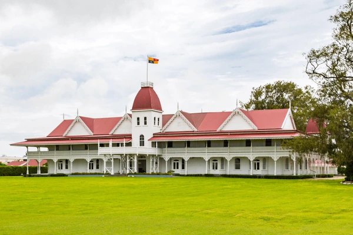

Palace
Royal Palace of Tonga: The official residence of the Tongan monarch, the Royal Palace in Nukuʻalofa is a historic wooden structure built in 1867, symbolizing the nation’s enduring monarchy.
Royal Palace of Tonga: The official residence of the Tongan monarch, the Royal Palace in Nukuʻalofa is a historic wooden structure built in 1867, symbolizing the nation’s enduring monarchy.